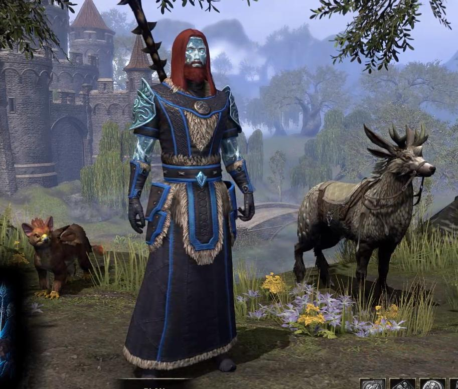
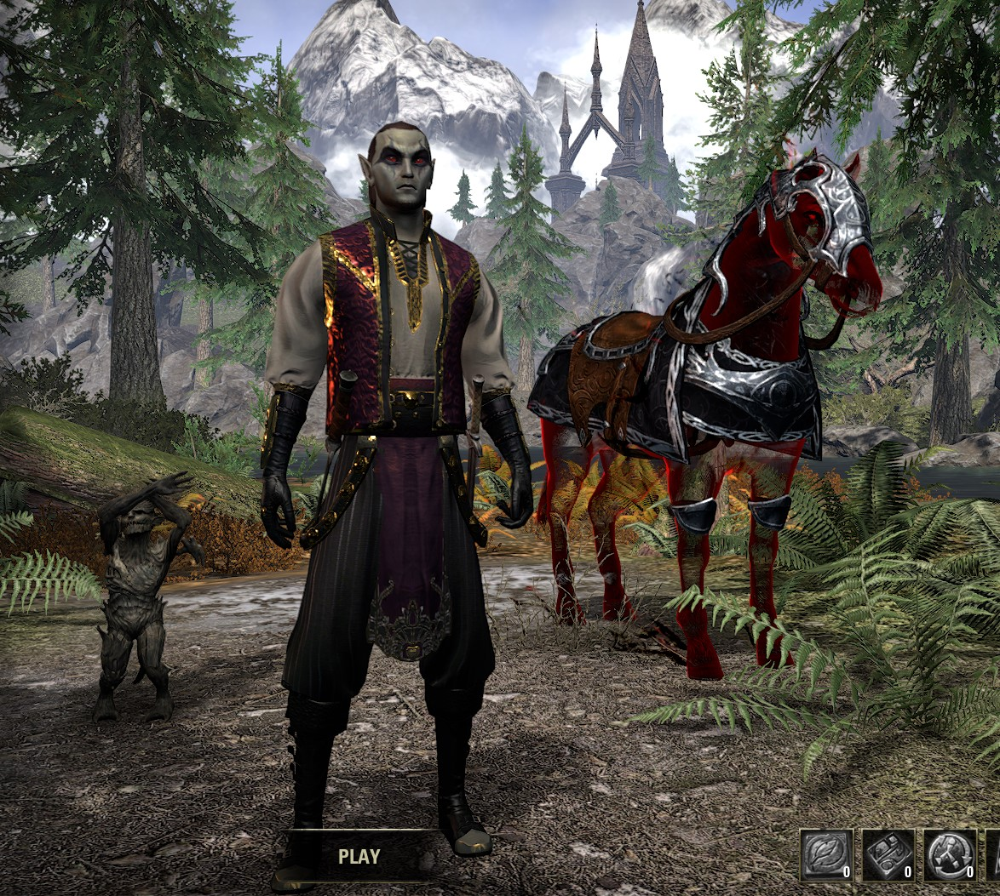

Quentavar
Quentavar is my Sorcerer DPS. He wears mothers sorrow, and law of julianos with the Valkyn Skoria helmet/shoulders. He currently does 21.7k dps, and he is my main. I am also leveling up his crafting abilities in hopes of getting him to be a master crafter. He is currently level 50 in all the crafts except for Provisioning, and Jewlery.(The image is extremely out of date)

Roggvir the Mighty
Roggvir is my tank. He is currently only a level 29 DragonKnight and he is not that good. I am finding out that I actually like tanking, but I don't know if I prefer it over DPS. He will just be my tank, (not main quester or crafter) but I plan to get him to level 50, and doing trials.
Admiral Rubbish
Admiral rubbish is a Vampire Nightblade Assassin. He is currently level 50. He is an avid member of the thieves guild, and the dark brotherhood. He is my money making character. He can also gather mats extremely fast due to his gear, and ability set. (Due to U27, he is slower due to the Rapid Maneuver change, but I am working on regaining that skill)

Quaranar (Witch Farmer)
Quaranar is my Healer Warden. At first, he was a DPS, until I found out how bad magden dps were. Now I want to turn him back into a DPS since I kind of liked him as a magden, and I am finding out now that they are not actually that bad. I am considering whether to keep him as a healer, switch him back to a magden, or switch him to a stamden. For some reason, my sister calls him a "Witch Farmer" though..
Capt. Rubbish
Capt. Rubbish is my other nightblade. He was kind of a test nightblade and got to level 19 before I changed to Admiral Rubbish...
Captain Rubbish
Captain Rubbish is my very first character. He is a level 11 templar and I only sometimes use him for writs (740G per day...)